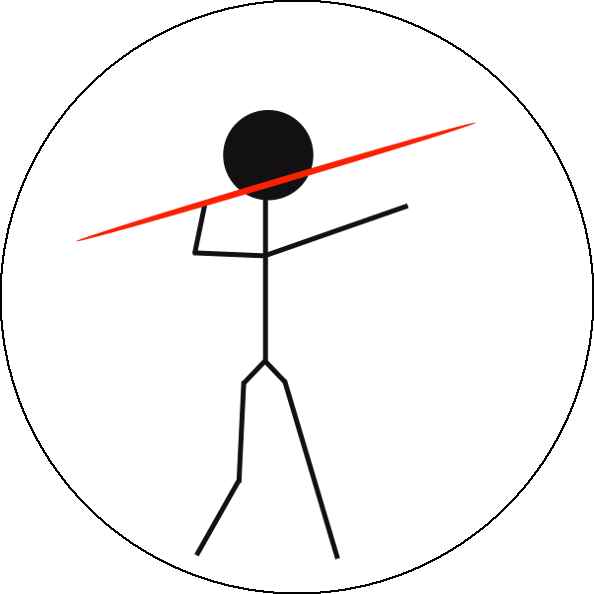

JAVELIN
Just Another Vehicle for Estimating Lags In Nuclei
Introduction

JAVELIN, formerly known as SPEAR, is a new approach to reverberation mapping that computes the lags between the AGN continuum and emission line (spectroscopic or photometric) light curves and their statistical confidence limits. It uses a damped random walk model to describe the quasar continuum variability and the ansatz that emission line variability is a scaled, smoothed and displaced version of the continuum. While currently configured only to simultaneously fit light curve means, it includes a general linear parameters formalism to fit more complex trends or calibration offsets. The noise matrix can be modified to allow for correlated errors, and the correlation matrix can be modified to use a different stochastic process. The transfer function model is presently a tophat, but this can be altered by changing the line-continuum covariance matrices. It is also able to cope with some problems in traditional reverberation mapping, such as irregular sampling, correlated errors and seasonal gaps.
Documents
For a thorough description of the underlying statistics and physics, please see Zu et al. 2011. A local copy can be obtained here.
For a somewhat more pedagogical derivation of the mathematical formalism than is in the paper, please see here.
For studies using the damped random walk process to model quasar variability, see Kelly et al. 2009, Kozlowski et al. 2010, MacLeod et al. 2010, and Zu et al. 2012.
Download
For download and documentations, please check out the online repository here.
Citation
You are welcome to use and modify JAVELIN, however please acknowledge its use either as is or with modifications with citations to:
for quasar optical variability studies, to for spectroscopic reverberation mapping, and/or to for photometric reverberation mapping.